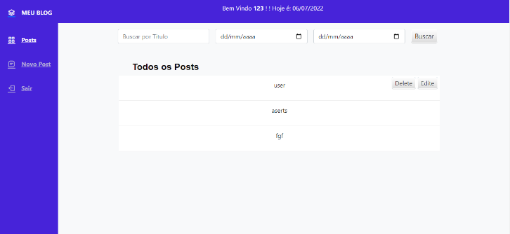

Desenvolvimento
Já desenvolvi alguns projetos pessoais e projetos de cursos como por exemplo:

Blog
Um blog em PHP com sistema de autenticação de usuarios e niveis de acesso para admins e usuarios
Explore no meu GitHub.
GitHub


Digidex
Por ser fã e sentir a falta de um projeto onde pudesse rever meus digimons favoritos
Explore no meu GitHub.Explore no meu GitHub.
GitHub
Blog
Um blog em PHP com sistema de autenticação de usuarios e niveis de acesso para admins e usuarios
Explore no meu GitHub.
Digidex
Por ser fã e sentir a falta de um projeto onde pudesse rever meus digimons favoritos
Explore no meu GitHub.Explore no meu GitHub.